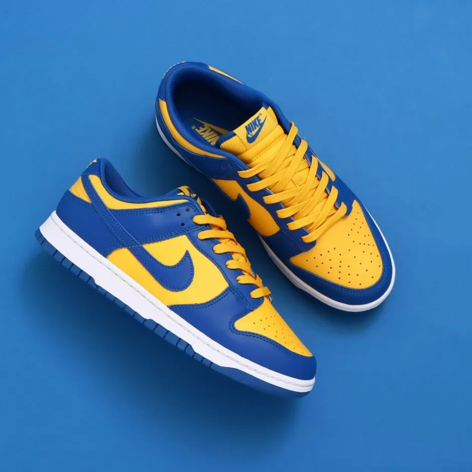

<ion-header [translucent]="true">
  <ion-toolbar>
    <ion-buttons slot="start">
      <ion-menu-button menu="m1" style="color: white;"></ion-menu-button>
    </ion-buttons>
    <ion-buttons slot="end" *ngIf="isLoggedIn">
      <ion-button [routerLink]="['/login']">{{user.email}}</ion-button>
    </ion-buttons>
  </ion-toolbar>
</ion-header>

<ion-content [fullscreen]="true">
  <div class="home-img">
    
  </div>
</ion-content>
